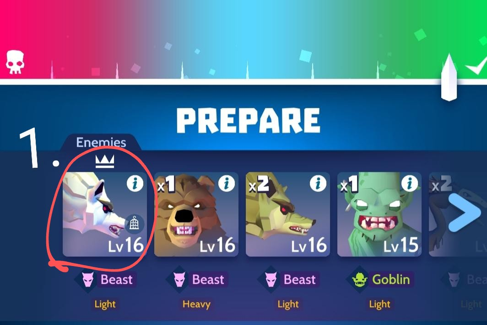

Véletlenszerű időközönként jelennek meg adott vadászatoknál a befogható lények, ilyenkor egy ketrec ikon látható(1) , rákattintva megmutatja a játék, hogy milyen kesztyűt kell viselni a megszerzésükhöz(2), ezt felvéve bezöldül a ketrec(3) és csak végig kell játszani a pályát. Működik auto play-ben is és nem muszáj, hogy 3star -os legyen, viszont raidelésnél nem adja meg. Duplikált befogás esetén kaját ad, amivel boostolni lehet őket.
